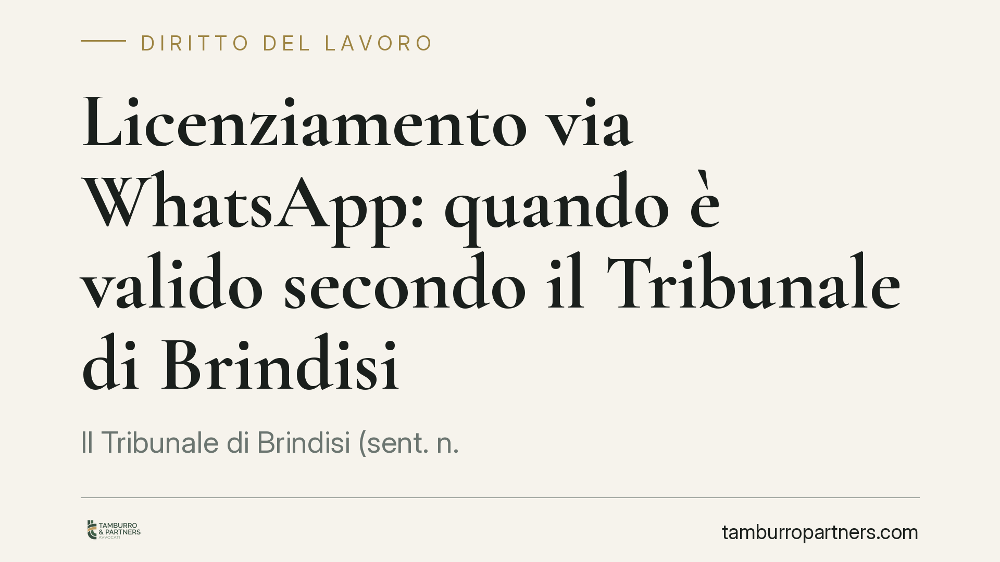

Licenziamento via WhatsApp: quando è valido secondo il Tribunale di Brindisi
Il Tribunale di Brindisi (sent. n. 52/2026) ha considerato valido il licenziamento comunicato con un file inviato su WhatsApp, anche privo di firma autografa, quando è lo stesso lavoratore a produrlo in giudizio. La pronuncia conferma però l'obbligo di repechage e le tutele indennitarie del Jobs Act in caso di illegittimità del recesso.

Il caso deciso a Brindisi
Un datore di lavoro comunica il licenziamento inviando al dipendente un file tramite WhatsApp. Il documento non reca firma autografa. Il lavoratore impugna il recesso e, nel farlo, produce in giudizio proprio quel messaggio.
Il Tribunale di Brindisi, con la sentenza n. 52/2026, ha ritenuto validamente comunicato il licenziamento. Il punto centrale: la legge richiede la forma scritta, non necessariamente la sottoscrizione autografa né un canale specifico di trasmissione. Se il contenuto è chiaro e la ricezione è provata, il requisito di forma è soddisfatto.
Inquadramento normativo
L'art. 2, comma 1, della L. 604/1966 impone che il licenziamento sia comunicato per iscritto, a pena di inefficacia. La norma tutela la certezza della manifestazione di volontà, non una particolare solennità.
Sul piano probatorio, un file inviato via WhatsApp costituisce documento informatico. La produzione in giudizio da parte dello stesso destinatario rende incontestabile sia la provenienza sia la ricezione: il lavoratore, esibendo il messaggio, ne conferma implicitamente l'avvenuta conoscenza. Da qui la validità della comunicazione ai fini dell'art. 2 L. 604/1966.
Restano fermi i requisiti sostanziali di legittimità. L'art. 3 della L. 604/1966 richiede il giustificato motivo; l'art. 5 pone a carico del datore l'onere di provare la sussistenza della causa. In caso di licenziamento per motivi oggettivi (economici o organizzativi) opera inoltre l'obbligo di *repechage*: il datore deve dimostrare l'impossibilità di ricollocare il lavoratore in altre mansioni compatibili, secondo la disciplina dello ius variandi dell'art. 2103 c.c. Se questa prova manca, il recesso è illegittimo, a prescindere dalla forma con cui è stato comunicato.
Le conseguenze economiche seguono il D.Lgs. 23/2015 (cosiddetto Jobs Act) per i rapporti a tutele crescenti: in caso di illegittimità, la regola generale è l'indennità risarcitoria, con reintegrazione limitata a ipotesi specifiche.
Cosa cambia in concreto
La pronuncia chiarisce un equivoco diffuso: la forma "digitale" non è di per sé causa di nullità. Un licenziamento comunicato via WhatsApp, e-mail o altro strumento telematico può essere valido, purché consti la forma scritta e sia provata la ricezione.
Per il datore di lavoro ciò non significa che la comunicazione via chat sia una scelta prudente. La validità è stata affermata perché è stato il lavoratore a produrre il messaggio. In assenza di tale ammissione, il datore rischia contestazioni sulla provenienza del file, sull'integrità del contenuto e sull'effettiva consegna. Il canale informale, inoltre, non incide sulla legittimità sostanziale: motivazione carente, mancato repechage e vizi procedurali restano sanzionabili.
Per il lavoratore, l'insegnamento è opposto e non meno rilevante. Produrre in giudizio il messaggio ricevuto può consolidare la validità formale del licenziamento che si intende contestare. La strategia difensiva va calibrata: contestare la forma può risultare controproducente se contestualmente si esibisce la prova della ricezione. Spesso conviene concentrare l'impugnazione sui vizi sostanziali, dove le tutele indennitarie del Jobs Act offrono margini concreti.
Resta valido, in ogni caso, il termine di decadenza per l'impugnazione stragiudiziale del licenziamento: 60 giorni dalla ricezione della comunicazione, seguiti dai 180 giorni per il deposito del ricorso o la richiesta di conciliazione.
Cosa fare in concreto
- Datori di lavoro: privilegiate canali che garantiscano la prova certa della consegna (PEC, raccomandata A/R, consegna a mani con firma). Evitate le chat come strumento principale di recesso.
- Prima del licenziamento economico: documentate per iscritto la verifica del repechage, indicando le posizioni esaminate e le ragioni dell'impossibilità di ricollocazione.
- Lavoratori: conservate il messaggio ricevuto ma valutate con attenzione, prima di produrlo, l'effetto probatorio sulla forma; concentrate le contestazioni sui profili sostanziali.
- Rispettate i termini: attivate l'impugnazione entro 60 giorni dalla ricezione, quale che sia il canale utilizzato.
- In ogni caso: fatevi assistere per una valutazione preliminare del recesso, verificando motivazione, procedura e regime sanzionatorio applicabile.
Disclaimer
Contributo informativo a cura di Tamburro & Partners - Avv. Giuseppe Tamburro. Non costituisce parere legale.
Ogni storia di lavoro ha i suoi tempi.
Se gestisci HR e vuoi un confronto su contenzioso, ispezioni o licenziamenti, scrivi allo studio. Ti rispondiamo entro un giorno lavorativo.